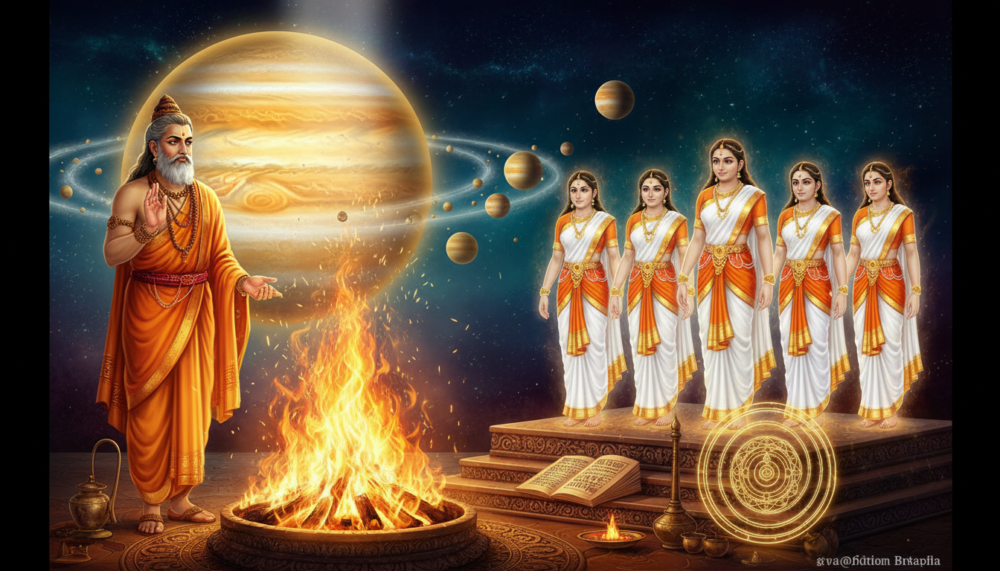

There is a name that sits behind the mostauspicious planet in the Hindu sky, and almost nobody knows it is there. When a Thursday ritual is prescribed, when Jupiter is called the Guru of the Devas, when the graha that brightens the eighth house of every horoscope is named — the name behind the name is Angiras. A Vedic rishi described as a teacher of divine knowledge and a mediator between men and the gods, counted in some texts among the seven great sages, remembered in others as the very first of the fire-gods.

This article is about how that happened, and — more usefully — what you can actually do with it. Because Angiras is not a fossil. He is a working lineage with a documented archive, a documented family, and a documented failure mode, and the failure mode is the most useful part.
Here is the shape of what follows. The Angirasa clan is credited with hymns in the first, second, fifth, eighth, ninth, and tenth books of the Rigveda — including Mandala 8 (the Kaṇva and Āṅgirasa book) and Mandala 10, which carries the Purusha Sukta and the Hymn of Creation. His son became Brihaspati, who is Jupiter, whose other Vedic name is Angirasa — literally "son of Angiras". The same clan, working from the Kuru and Pancala regions, authored the Atharvaveda, the "Veda of magical formulas", and for a long time the corpus was called Atharvāṅgirasaḥ — Atharvan-and-Angiras, a compound naming both authors. And the whole body of work carries one warning that is worth more than the whole lineage to anyone building a remedy practice.
1. His job title was "fire-priest" — and that is exactly what a remedy priest is
Wikipedia's Angiras article opens with the job, not the biography. Angiras is "described in the Rigveda as a teacher of divine knowledge, a mediator between men and gods, as well as stated in other hymns to be the first of the Agni-devas (fire gods)."
Read that again slowly. Teacher of divine knowledge. Mediator between men and gods. First of the fire-gods. Three functions, and all three are functions you perform when you sit down with a difficult chart. You do not argue with the malefic. You do not explain it away. You stand in the middle, with fire in front of you, and you translate.
And the article adds the detail that makes it a practice rather than a title: the Vedic texts place Angiras "in various roles such as a fire priest or a singer." A fire priest does the offering. A singer does the invocation. Angiras does both — which is precisely the double competence of a competent remedy worker. You burn the offering and you carry the hymn.
The working form: Stand at the fire, and know which of the two jobs you are doing. For any Thursday rite, split the work explicitly: the offering (homa, lamps, oblations) and the invocation (the mantra, counted and directed at a named graha). Most people fail Thursday practice by doing the offering and skipping the invocation, or by chanting beautifully while the offering is wrong. Angiras held both posts. So: fix the offering first — one specific item, one specific quantity, one specific fire, done the same way every Thursday. Then fix the mantra. Never let the mantra be improvised to match how the day went.
2. He is three different things at once — and the sources keep warning you about it
Here is the first and most useful piece of caution in the entire lineage. Wikipedia's Angiras article reports Max Müller's distinction, and it is sharper than most people expect:
the sage Angiras in Vedic literature is different from the plural term Angirasa, and these terms refer to different people. The Angiras rishi is different from the group of sorcerers in Atharvaveda also named Angirasa, and according to Muller, the Vedic rishi is also different from a class of divine beings who too are called Angirasa in the Vedic texts and described as "sprung from coals (angara)".
Three referents. The man who was a sage. The clan of sorcerer-priests in the Atharvaveda. The divine beings sprung from coals.
This is a naming collision, and naming collisions are where remedies get crossed. The same word points at a teacher of divine knowledge and at a group associated with hostile sorcery. If you invoke "Angirasa" without knowing which of the three you are addressing, you have not made a mistake of etiquette. You have made a mistake of address.
Note also that Müller derives the coals-reading from the root angara — coal, ember. The divine beings called Angirasa are literally the ones who came out of the fire. Whatever else that is, it is a coherent and specific image, not a vague one.
The working form: Before you name a lineage in a remedy, write down which of the three you mean — in one line, with the reason. Say it plainly: the sage Angiras, teacher of divine knowledge, mediator, or the Angirasa clan of the Atharvaveda, or the beings sprung from the coals. This takes ninety seconds and it is the single highest-leverage habit in the whole article, because the third version — the coals — is the one with the most direct ritual payload, and it is also the one you will get wrong by accident. The coal-beings are the embers. When you build a remedy, you are not addressing a personality. You are addressing the material residue of a fire that was never allowed to go out.
3. The son: Brihaspati, and the planet that took his father's name
The genealogy is where the astrological weight sits. In one Puranic account, Angiras "married Smriti (memory), the daughter of Daksha," and in another, "his wife is stated to be Surūpa and his sons are Utathya, Samvartana and Brahaspati." Other accounts have him marrying Shubha, and then "they had seven daughters named after aspects of 'fire' and a son named Brihaspati." The article is honest that "the Vedic sage Angiras appears in medieval Hindu texts with contradictory roles as well as many different versions of his birth, marriage and biography," and that "the name Angirasa is applied generically to several Puranic individuals."
So: take the wife-list with a grain of salt, and take the fatherhood of Brihaspati with none. Wikipedia's Brihaspati article states the parentage as a matter of record in the infobox — Parents: Angiras (father), Surupa (mother) — and Brihaspati's own article says that in Vedic literature he is "also called by other names such as Bramanaspati, Purohita, Angirasa (son of Angiras) and Vyasa."
That last parenthetical is the pivot of this entire article. Brihaspati is called Angirasa. Jupiter is called Angirasa. When you see "Angirasa" in a Thursday context, you are looking at the planet's patronymic. The lineage did not merely produce a teacher who taught a god; the lineage became a name inside the graha itself.
And this is not a decorative detail. Look at what else rides on it: Brihaspati "is considered Guru (teacher) by all the Devas"; he is "described as a sage born from the first great light, the one who drove away darkness, is bright and pure"; his day is Thursday; his colour is yellow; his numbers are 3, 12, 21 and 30; his mount is a "chariot drawn by eight white horses"; his abode is Svarga; his mantra is "Om Brihaspataye Namaha"; and he is a member of the Navagraha. Every Thursday rule you have ever been given is downstream of this one father.
The working form: Say the patronymic out loud at least once during the rite. In the Thursday practice: Om Brihaspataye Namaha — and then, once, in your own words, "Brihaspati, son of Angiras." This is not decoration. The whole mechanism of a remedy is address — you are not emitting sound at a planet, you are addressing a being through a lineage. The patronymic is the addressing mechanism. Use it consistently: Angiras, Brihaspati, Angirasa, Guru, Jupiter. Same being, five handles, and the lineage name is the one most people omit. Pick a sequence and never vary it. If you vary the handle, you are addressing a different entity each time, and you will never be able to tell whether the practice worked.
4. The bow with a string of Rta — the occult instrument nobody writes down
Wikipedia's Brihaspati article carries one sentence that is worth the entire article on its own:
he is described as a sage born from the first great light, the one who drove away darkness, is bright and pure, and carries a special bow whose string is Rta or "cosmic order" (basis of dharma).
A bow. With a string. And the string is not leather and not gut — the string is Rta, cosmic order, the basis of dharma.
Now put that next to the Nakshatra article's table of Punarvasu, the seventh of the twenty-seven mansions: Punarvasu is "Return Of The Light", its stars are Castor and Pollux, its astrological leader is Guru (Jupiter), its symbol is a bow and quiver, and its deity is Aditi, "goddess representing the infinity and the mother of Adityas." Jupiter rules Punarvasu, and Jupiter's symbol in the sky is also a bow — and Jupiter himself carries a bow whose string is Rta.
That is not a coincidence of iconography. It is a closed loop. The planet that carries cosmic order on its bow is the ruler of the mansion whose symbol is a bow. The graha and the mansion are showing you the same instrument.
And the instrument has a function, because bows do. Rta is not a decorative concept here — the Rigveda article notes that the term appears as the basis of dharma, and the bow is the thing that shoots. The bow-and-quiver is the shooting apparatus, and cosmic order is what is on the string. Which means: the shot you take is the shot that is ordered, not the shot that is angry.
The working form: Give the bow one target and one string, and do not loosen the string. Concretely, for the Jupiter remedy: (1) pick one target — a single named problem, a single house, a single planet you are actually managing; (2) treat the Thursday rite as a shot, not a plea — you are loading Rta (correct order, correct count, correct fire, correct time), not begging; (3) do not fire two bows on the same day. One target per Thursday, for four Thursdays minimum, before you change targets. This is the entire difference between a bow with Rta on it and a bow with fraying gut.
5. Seven daughters named after aspects of fire — the family that became a remedy index
The Shubha account gives Angiras "seven daughters named after aspects of 'fire' and a son named Brihaspati."
Seven daughters. Named after aspects of fire. One son, who became the planet.
Hold that structure against the Dasha article's table of which nakshatras each graha lords. Jupiter (Vyazhan/guru) lords Punarvasu, Vishakha, and Purva Bhadrapada — three mansions, for a sixteen-year period. Saturn (Shani) lords Pushya, Anuradha, and Uttara Bhadrapada — also three. Every graha lords three nakshatras. The system is uniform: the planet is not a point on the wheel, it is a trio.
So the Angirasa household is a natural remedy index in a way that is almost too neat to be accidental: a patriarch whose competence is fire, seven daughters each embodying a specific aspect of that fire, and a son who becomes a planet. Seven aspects of one substance, plus the one that generalises into a graha.
That is precisely the architecture of a good remedy practice. You do not have one Jupiter remedy. You have seven — one per aspect of fire — and a seventh-day, 16-year general form for when you need the whole planet addressed at once.
The working form: Write your seven. Do not write one. Sit down and name seven distinct aspects of fire as they operate in a human life — purification, destruction of the unwanted, the light that dispels, the warmth that sustains, the flame that reveals what is hidden, the fire that is simply the agent of transformation, the fire that is carried and kept alive. These are yours; the sources give you the number (seven daughters of fire) and the principle (one aspect each), not the list, and that is correct, because a remedy you did not choose yourself is not yours. Then assign each aspect to one day or one condition. When a client or a chart shows a specific kind of damage, you have a specific fire for it. When nothing specific is showing, you use the sixteenth-year, three-mansion, all-Thursday form.
6. Three fires for one man: the "coal-born" reading, and the other Angirasa
We established in section 2 that the coals-reading is the third referent. Now let us look at why it is the most usable.
The Atharvaveda article is where the Angirasa clan does its most characteristic work. Frits Staal reports that the text "may be a compilation of poetry and knowledge that developed in two different regions of ancient India, the Kuru region in northern India and the Pancalas region of eastern India," and that the Pancalas contributions "came from composer-priests Angirasas and Bhargavas, whose style was unlike the metric Rigvedic composition, and their content included forms of medical sorcery."
So the clan that the Rigveda calls a lineage, the Atharvaveda calls a specialism. The Angirases are the medical-sorcery branch of the same house. That is an enormous piece of practical information, and it is very unusual to see it stated this plainly: the family that taught divine knowledge to the gods also wrote the spells for disease.
And the material is specific. The Atharvaveda is "a collection of 730 hymns with about 6,000 mantras, divided into 20 books," and about "a sixth of the Atharvaveda texts adapt verses from the Rigveda." Monier Williams' description of Atharvan's function is that he "composed 'formulas and spells intended to counteract diseases and calamities'." Bloomfield's translation notes name the specific charms: 2.32 Bhaishagykni, the charm to secure perfect health, and 4.2.36 Strijaratani, the charm to find a good husband — and record that "Atharvaveda dedicates over 30 chapters to love."
Thirty chapters. On love. And separate chapters on health, on calamity, on the diseases of specific parts of the body.
The working form: Keep the coal alive; do not light a new fire each time. This is the most physically concrete occult mechanic in the article, and it maps exactly onto the "sprung from coals" reading. Practically: keep a dedicated vessel (an āgamicuha-style copper or clay fire-pot, or a small charcoal brazier) in one fixed place in your home or clinic. Light it from a previously burning coal — never from a match alone. That is the coal-born transmission, done literally. Use that same fire for the Angirasa-family Thursday rites and for the health-charms derived from the Atharvaveda material. Never let it go fully out; let it go to coals and relight from the coals. The ember is the lineage. A fire started fresh each time is a different practitioner every Thursday.
7. Mandala 8 and Mandala 10: the two books the clan actually owns
Now the archive. The Rigveda article gives the clan table: Mandala 2 Gṛtsamāda, Mandala 3 Viśvāmitra, Mandala 4 Vāmadeva, Mandala 5 Atri, Mandala 6 Bharadvāja, Mandala 7 Vasiṣṭha, Mandala 8 Kaṇva and Āṅgirasa.
And the same article describes Mandala 8 in detail: "Mandala 8 comprises 103 hymns to various gods. Hymns 8.49 to 8.59 are the apocryphal vālakhilya. Hymns 1–48 and 60–66 are attributed to the clan of the sade Kaṇva, the rest to other (mainly Āṅgirasa clan) poets."
So Mandala 8 is a joint book. Kaṇva holds the first block and one late block; the Āṅgirasa hold the middle. And the Angiras article confirms the wider footprint: the Angirases "are credited to be the authors of some hymns in the first, second, fifth, eighth, ninth, and tenth books of the Rigveda," and the sub-clans divide the work cleanly — "Various Angirasa sub-clans, including the Śunahotras, the Gautamas, and the Bhāradvājas composed Mandalas II, IV, and VI respectively."
Mandalas II, IV and VI are not the occult ones. The occult ones are VIII, IX and X.
Mandala 9 is "114 hymns, entirely devoted to Soma Pavamāna, the cleansing of the sacred potion of the Vedic religion." Mandala 10 "comprises additional 191 hymns, frequently in later language" and contains "the Purusha sukta which has been important in studies of Vedic sociology," the "Nasadiya sukta (Hymn of Creation) (10.129) which deals with multiple speculations about the creation of universe, and whether anyone can know the right answer," the "marriage hymns (10.85)," and the "death hymns (10.10–18) still are of great importance in the performance of the corresponding Grhya rituals."
Look at that list. The Angirasa-held books of the Rigveda are: the joint Kaṇva book with its apocryphal appendix; the Soma-cleansing book in its entirety; and the book holding the Hymn of Creation, the marriage hymns, and the death hymns that still drive the domestic rites.
Soma cleansing, creation, marriage, and death. That is the entire practical arc of a human life, and the Angirasa clan wrote it. This is not a decorative lineage — this is the corpus that a family of ritual specialists actually used, and it is the reason "Angiras" belongs in a remedial-astrology article rather than a mythological one.
The working form: Match the corpus to the life-stage, not to the planet. Build your remedy library in four named sections, in this order: cleansing (the Soma Pavamāna material — for the start of any Jupiter dasha, before anything else), opening (the Hymn of Creation material — for the moment a client decides to begin), bonding (the marriage hymns — for relationship and partnership issues under Jupiter), and release (the death hymns, read strictly as the Grhya material they are — for endings, severance, and the deliberate letting go of a period). Do not mix the sections. A cleansing rite performed in the release section, or a release rite used as an opener, does not do what it says. The order above is the order of the books.
8. The Hymn of Creation — the one document every rishi must answer
Wikipedia's Rigveda article describes the Nasadiya Sukta as the hymn "which deals with multiple speculations about the creation of universe, and whether anyone can know the right answer."
That parenthetical is the point, and it is the reason this hymn belongs in an article about how to run a remedy practice. The Hymn of Creation (10.129) is the founding document of a procedure for not knowing. It poses the question and reaches no answer. It is the ancestor of every honest astrological method ever written: you may not determine this; here is how the attempt proceeds; here is what a wrong answer would look like.
And it sits in Mandala 10 — the Angirasa book.
There is a second, sharper detail waiting. The Rigveda article also records the political layer: codification "took place late in the Rigvedic or rather in the early post-Rigvedic period at c. 1200 BCE, by members of the early Kuru tribe," and that the collection was "an effort to reconcile various factions in the clans which were united in the Kuru kingdom under a Bharata king."
The working form: Keep a question-book, and never close it. Practically: for every reading you do, write down one thing you could not determine, and one thing that would change your answer. Keep these in one book, dated. Never resolve them by assertion; resolve them only by new observation. This is the Hymn of Creation made operational — the discipline of recording one's own ignorance in a specific, dated, non-decorative form. A remedy practice that never records what it does not know will drift into pretending, and then it becomes the sorcery the Atharvaveda warned about.
9. Atharvāṅgirasaḥ — the Veda named after two men, one of them a sorcerer
Now we reach the name that ties the whole lineage together, and it is a strange name.
The Atharvaveda article states that "The oldest name of the text, according to its own verse 10.7.20, was Atharvangirasah, a compound of 'Atharvan' and 'Angiras', both Vedic scholars." And then it delivers the twist:
The "Atharvan" and "Angiras" names, states Maurice Bloomfield, imply different things, with the former considered auspicious while the latter implying hostile sorcery practices. Over time, the positive auspicious side came to be celebrated and the name Atharvaveda became widespread.
Read that again. A single Veda named after two men. One half auspicious. One half hostile sorcery. And over centuries, the auspicious half won the name and the sorcery half quietly became just another "branch" of the same lineage — the Angirasa clan, the family that taught divine knowledge and also wrote the medical charms, filed under the same roof without anyone remarking on it.
Michael Witzel gives the etymology that makes this sharper still: the root of Atharvan is Proto-Indo-Iranian \*atharwan "\[ancient] priest, sorcerer," cognate with Avestan āθrauuan. And George Brown notes that the Angiras name, "which is linked to Agni and priests in the Vedas," "may also be related to Indo-European Angirôs found in an Aramaic text from Nippur."
The whole compound name — auspicious priest and hostile sorcerer — was sitting there in the Veda's own oldest title, and the tradition's resolution was to celebrate the good half and stop saying the compound out loud.
The working form: Say the whole name once, out loud, before you work. Atharvāṅgirasaḥ. One time, at the start, before the first lamp and before the first mantra. You are not performing a ritual of darkness — you are acknowledging that the same lineage holds both the auspicious teacher and the medical-sorcery branch, and that you are using the second responsibly and therefore must use the first properly. A remedy practice that draws only on the auspicious half of a lineage that also produced the disease-charms is like using a physician's name without their training. If you use the charms, you owe the discipline.
10. The two halves, kept separately — the branch that the tradition renamed away
Here is the practical payoff of the previous section, and it is a real, documented structural fact rather than a metaphor.
The Atharvaveda article records that the text "is sometimes called the 'Veda of magical formulas'," a description "other scholars consider incorrect," and that "in contrast to the 'hieratic religion' of the other three Vedas, the Atharvaveda is said to represent a 'popular religion', incorporating not only formulas for magic, but also the daily rites." Kenneth Zysk describes it as "one of oldest surviving record of the evolutionary practices in religious medicine," revealing "the earliest forms of folk healing of Indo-European antiquity."
And the two recensions carry the split physically. "Two different versions of the text – the Paippalāda and the Śaunakīya – have survived into the modern times." The Paippalāda school was the Kuru-region house, its name "derived from the sacred fig tree named Pippala," and "The Paippalāda edition is more ancient." The Paippalāda manuscripts were believed lost — "Reliable manuscripts of the Paippalada edition were believed lost, but a well-preserved version was discovered among a collection of palm-leaf manuscripts in Odisha in 1957."
There were once nine schools. "A later era Sanskrit text states that the Atharvaveda had nine shakhas, or schools: paippalāda, stauda, mauda, śaunakīya, jājala, jalada, brahmavada, devadarśa and cāraṇavaidyā. Of these, only the Shaunakiya recension, and the more recently discovered manuscripts of Paippalada recension have survived."
Nine branches, two survivors, one of them found again in 1957 in palm-leaf manuscripts in Odisha.
The working form: Keep your branches apart and keep your archive physical. Two concrete rules. (1) Do not mix the two recensions in one rite. The Paippalāda and Śaunakīya are different books with different ordering and different content; the Paippalāda Book 10 is "more developed and more conspicuous in describing monism." Choose one recension for your health-charms and stay in it. (2) Your remedy archive must be a physical object. Not a note on a phone that can be lost in an update; a bound notebook or a dedicated folder of printed text, with a written index. The Paippalāda branch was thought extinct and was found in a palm-leaf bundle in a temple collection. Every remedy tradition that lost its archive lost the tradition with it. Write your nine schools on one page — even if you only practise one — because the page names the branches that exist, and naming them is how you keep the door open.
11. Jupiter's sixteen years and the three mansions he lords
Now the part every reader came for, and it is arithmetic.
From the Dasha article: "Vimshottari in Sanskrit stands for the number 120. Vimshottari Dasha assumes that the maximum duration of life of an individual human being is 120 Solar sidereal years which is the aggregate duration of all nine planetary periods i.e. Ketu 7, Venus 20, Sun 6, Moon 10, Mars 7, Rahu 18, Jupiter 16, Saturn 19 and Mercury 17, in the order of their operation."
Jupiter: sixteen years. And the nakshatras he lords: "Jupiter (Vyazhan/guru) 16 Years Punarvasu Vishakha Purva Bhadrapada."
Sixteen years, three mansions. Punarvasu — the bow and quiver, ruled by Guru, deity Aditi. Vishakha. Purva Bhadrapada, the two fish-pairs of Pegasus (Markab and Scheat).
Now the warning that the Dasha article supplies, and it is technical enough to be worth quoting: "The sign, the navamsa and the nakshatra occupied by the Moon is of paramount importance; they form the basis for predicting future events. All planets are rendered weak when the Moon is devoid of strength."
The Moon is the seat. Every other graha is read through the Moon's position, its sign, its navamsa and its nakshatra. And when the Moon is weak, everything is weak. That single sentence decides the timing of any Jupiter remedy: if the Moon is afflicted, the Thursday rite is being fired through a broken lens.
The same article gives the two dasha-quality rules: a dasha is "Poorna" when the planet "is the most powerful or is in its sign of exaltation, which dasha gives health and wealth," and "Rikta" when the planet is "powerless." Varahamihira's refinement is sharper: "the dasha of the planet occupying unfriendly sign and navamsa will produce Aristhaphala i.e. undesirable or miserable results; the planet that has fallen from exaltation but is in friendly or exalted navamsa gives ordinary results, and the planet that is ascending from debilitation but is in debilitated or unfriendly navamsa, gives a worthless period."
The working form: Fix the Moon before you fix the planet. Three checks, in this order, every time you set a Jupiter remedy: (1) Which of Jupiter's three mansions is the Moon in? Punarvasu, Vishakha or Purva Bhadrapada is the supportive window; outside them, the Jupiter rite is on weaker ground. (2) Is the Moon in a friendly sign and navamsa? If not, you are running an Aristhaphala-period remedy — still worth doing, but expect less, and do not stack more remedies on top. (3) Is this a Poorna or Rikta Jupiter? Poorna (exalted or strong) → the full sixteen-year form, the whole three-mansion sequence. Rikta → the short, single-aspect form from section 5 only. Never give the long form during a Rikta period. The sixteen-year form is a full remedy and it needs a full seat to sit in.
12. Pushya — the mansion where Brihaspati is the god and Saturn is the ruler
Here is a detail worth having in your files, because it is genuinely lesser-known and it is practically useful.
Look at the Nakshatra article's Basham table for Pushya: "Puṣya 'The Nourisher' γ, δ and θ Cancri, Astrological leader: Shani (Saturn), Symbol: Cow's udder, lotus, arrow and circle, Deity: Bṛhaspati, counsellor of the gods, Indian zodiac: 3° 20′ – 16° 40′ Cancer."
Pushya is led by Saturn. And its deity is Brihaspati. Saturn governs the mansion; Jupiter's own name is the god sitting in it. Pushya is the eighth of the twenty-seven and it falls in the same stretch of sky as Punarvasu — Pushya spans 3°20′ to 16°40′ Cancer, Punarvasu spans 20° Gemini to 3°20′ Cancer. They are adjacent mansions in Cancer and Gemini. Jupiter's own mansion and Jupiter's own deity in Saturn's house sit side by side.
And the symbols are worth reading as a kit rather than a list. Pushya: "Cow's udder, lotus, arrow and circle." Punarvasu: "Bow and quiver." The Nakshatra article also gives Punarvasu's deity as Aditi, "goddess representing the infinity and the mother of Adityas." Ardrā, one mansion earlier, is led by Rahu with symbol "Teardrop, diamond, a human head" and deity Rudra. Mrigashira is led by Mangala with symbol "Deer's head" and deity Soma.
Pushya's symbol set is the most directly usable in the whole table, because it is a complete kit for a Jupiter remedy: the udder (nourishment), the lotus (purity and the seat of the goddess), the arrow (aim), and the circle (completeness — the 360° of the zodiac, the closed circuit of the dasha). Bow, quiver, arrow, circle: the shooting apparatus from section 4, and a target.
The working form: Use Pushya's four symbols as the Thursday kit. Concretely: the lotus (or a white flower, or a clean water vessel) for the offering's seat; the circle drawn once, unbroken, and not retraced, if you keep any written record of the rite; the arrow as the one-target rule from section 4 made physical; the udder for the act of nourishment — the actual giving of something to someone, which is the Jupiter remedy's real work. And when you do all four, do them in the Nakshatra article's listed order: udder, lotus, arrow, circle. Fix the order once. It is the only order the sources give.
13. Varahamihira's transit chapters — what a remedy book actually reads
Here is the single most practical document in the whole lineage, and it is a chapter list.
Wikipedia's Bṛhat Saṃhitā article — the Brihat Samhita of Varāhamihira — describes Varāhamihira's sixth-century Sanskrit encyclopedia compiled at Ujjain, "Besides the author's area of expertise — astrology and astronomy — the work contains a wide variety of other topics. His book is divided into 3 sections namely Tantra, Hora and Samhita." It holds "100 chapters in less than 4000 shlokas."
And then the chapter list. Among the titles: "Canons for Astrologers, Transit of the Sun, Transit of the Moon, Course of Rahu, Transit of Mars, Transit of Mercury, Course of Jupiter, Course of Venus, Transit of Saturn, Comets, Canopus, Course of the Seven Sages (Big Dipper), Divisions of globe, Stellar rulership, Planetary rulership, Planetary wars, Conjunction of the Moon with planets of stars, Planetary years and effects, The Planetary Triangle, ... Functions and Properties of Asterisms, Functions and Properties of Lunar Days, Qualities of the Karanas, Effects of Birth in the Asterisms, Division of the Zodiac, Planetary Combinations at Marriage, Transits of Planets, Worship of the Stellar Day, Conclusion."
Under 40 verses per chapter, on average, across a hundred chapters. Look at the shape of that index: it moves from canons, to the transit of each planet, to rulership, to the properties of the asterisms, to the effects of birth in them, to marriage combinations, to transit, to the worship of the stellar day. That is the reading order of a professional transit-and-remedy manual, and it is exactly the order a practitioner should work in.
Two more details from the same article that change how you use it. Varāhamihira "does not discuss several traditional topics which he considers legendary and unscientific" — so this manual is already filtered, and you can trust the absence of an entry as information. And "The anga discusses divination based on planets, asterisms, and zodiac signs. The upanga discusses a wide variety of other topics" — so the planetary spine is the anga, the core, and everything else is supplementary. The structure says: planets first, everything else second.
The working form: Read your Jupiter case in Varahamihira's order and stop at the chapter you need. For any Jupiter remedy: (1) Canons for Astrologers — the rules of the house you are working in; (2) Course of Jupiter — where Jupiter actually is and what it is doing; (3) Functions and Properties of Asterisms — the nakshatra's own character; (4) Effects of Birth in the Asterisms — the natal floor you are working from; (5) Transits of Planets — the current trigger; (6) Worship of the Stellar Day — the ritual form. Six steps, in that order, every time. And note the discipline in the middle: planetary first, everything else after. Most people reverse this — they go to the nakshatra's deity or the marriage combination first and then work backwards to the planet. Varāhamihira's index says otherwise.
14. The 4,332-day number, and how the old tables compare to arithmetic
One more piece of the machinery, because it explains why transit-timing rules behave the way they do.
Wikipedia's Brihaspati article gives a table of how many days Brihaspati (Jupiter) takes to complete an orbit, from four sources:
- Surya Siddhanta — 4,332 days, 7 hours, 41 minutes, 44.4 seconds
- Ptolemy — 4,332 days, 18 hours, 9 minutes, 10.5 seconds
- Siddhanta Shiromani — 4,332 days, 5 hours, 45 minutes, 43.7 seconds
- 20th century calculations — 4,332 days, 14 hours, 2 minutes, 8.6 seconds
Four sources, four different sub-day figures, and the integer day-count identical across all of them. The Surya Siddhanta also gives the long-period figure: Brihaspati "completes 364,220 revolutions every 4,320,000 earth years," with "an Epicycle of Apsis as 32 degrees," and "had an apogee (aphelia) of 160 degrees in 499 CE; while another manuscript of Surya Siddhanta accepts the revolutions to be 364,220, but revises the apogee to 171 degrees and 16 seconds and the Epicycle slightly."
Do the arithmetic. The difference between the Surya Siddhanta figure and the 20th-century figure is about 6 hours 20 minutes per Jupiter revolution — a little over two arcminutes of Jupiter's position, per twelve-year cycle. That is small, and it is also cumulative: over a lifetime of roughly ten Jupiter revolutions, it compounds to over twenty arcminutes of drift.
That is the real lesson, and it is a lesson about method rather than about Jupiter. The old tables are extraordinarily good — they get the revolution period right to the day across sixteen centuries — but their parameters (the apogee, the epicycle) differ between manuscripts, and the manuscript differences do not cancel. Which is exactly why the Brihaspati article says the texts "vary in their data, suggesting the text were open and revised over their lives."
The working form: Never mix transit tables. Ever. A remedy schedule computed on the Surya Siddhanta and checked against a modern ephemeris will disagree — not by much, but by enough that a remedy timed to a degree-boundary fires in the wrong place. So: (1) pick one ephemeris and one table family and record both in writing at the top of your remedy log; (2) when a transit falls within a few degrees of a sign boundary, treat that boundary as fuzzy — schedule on both sides of it rather than gambling on the exact degree; (3) never average two tables to "be safe." Averaging is how you get a position that is correct in neither system. And note the Surya Siddhanta's own apogee revision — 160° in one manuscript, 171°16′ in another — as the model of the discipline: when your two references disagree, that disagreement is data, and it goes in the log.
15. What this article is not
It is not a claim that Angiras invented astrology, or that the Angirasa clan wrote the whole Rigveda, or that Jupiter's sixteen-year period is a modern invention. The lineage is a documented component of a larger, messier corpus, and the honest version is more useful than the flattering one.
Specifically: the Jyotisha article records that "Early jyotiṣa is concerned with the preparation of a calendar to determine dates for sacrificial rituals, with nothing written regarding planets," that the Ṛigveda mentions the eclipse-causing Svarbhānu but that "the specific term graha was not applied to Svarbhānu until the later Mahābhārata and Rāmāyaṇa," that the Chāndogya Upaniṣad mentions Rāhu, and — this is the part worth sitting with — that "Technical horoscopes and astrological ideas in India came from Greece and developed in the early centuries of the 1st millennium CE." It also notes that "The ancient Hindu texts on Jyotiṣa discuss only timekeeping and never mention astrology or prophecy," and that the bandhu of the Vedas — the connection between microcosm and macrocosm — "is the foundation of Hindu astrology."
That last line is the honest foundation, and it is Angiras' own job description. The foundation of Hindu astrology is the connection between the microcosm and the macrocosm. A rishi described as a teacher of divine knowledge and a mediator between men and gods is, in that sentence, describing a practitioner of astrology's founding principle. Not its inventor. Its first practitioner.
And a word about what is not claimed here: the sources are explicit that Angiras' biography "appears in medieval Hindu texts with contradictory roles as well as many different versions of his birth, marriage and biography," that he is counted among the Saptarishis "in some texts" but "in others he is mentioned but not counted," and that the number of wives varies between one, two and four across the accounts. Where the sources disagree, this article has said so rather than picking the most convenient version. The one thing that is consistent across sources, and the thing this article is built on, is the fatherhood of Brihaspati and the clan's ownership of Mandalas VIII, IX and X.
Practically, then: the coal-lit fire that is never allowed to die; the bow with one target; the seven aspects of fire; the four-stage library in the order of the books; the full name said out loud once; one recension; one ephemeris; the Moon checked before the planet; a question-book for what you do not know; and a physical archive. None of that requires you to believe anything you would rather not. It only requires you to keep the chain unbroken — which is, in the end, the whole of what Angiras was actually for.